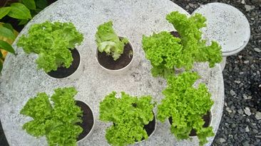
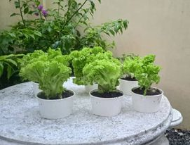
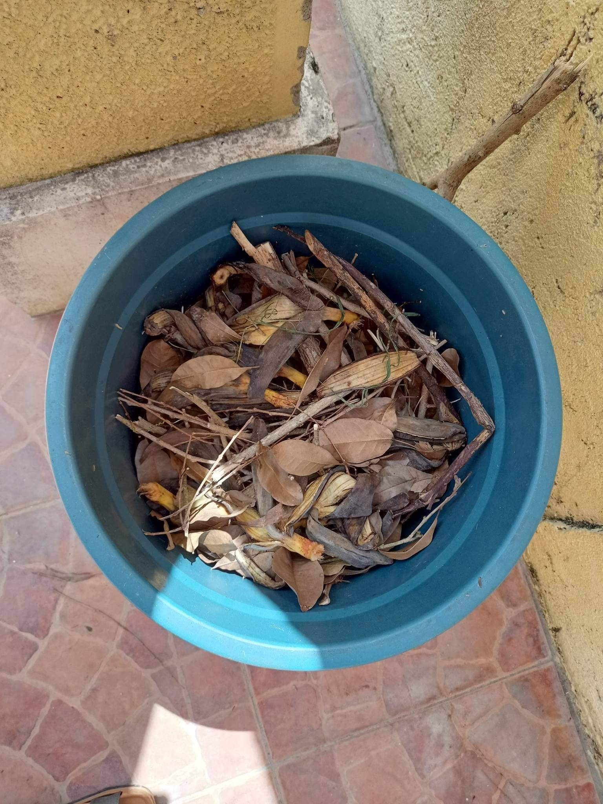
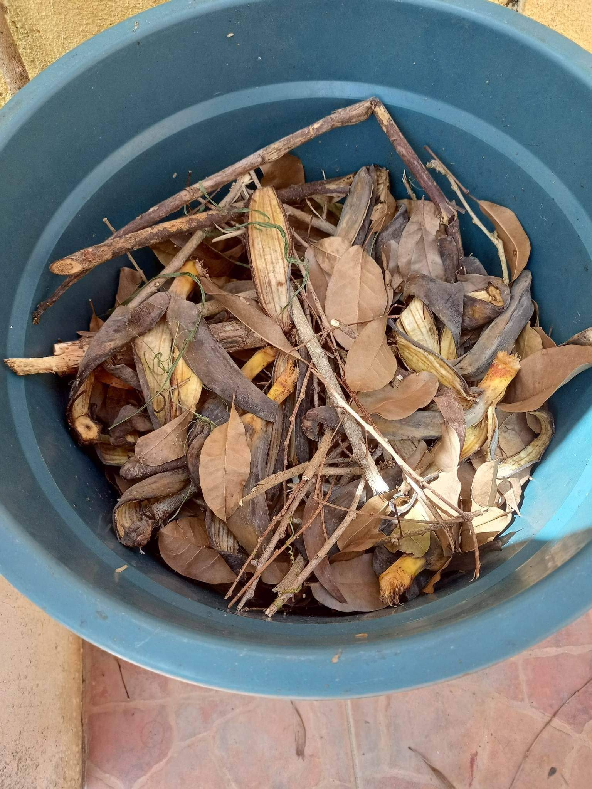

Background of the study
Composting is well known as the process of recycling organic matter into fertilizer.
It is significant for the community and most especially the environment as it enriches the soil,
reduces waste, and reduces the use of chemical fertilizers that could be harmful to the environment
because they can lead to soil degradation, loss of soil carbon, and more. It is said that organic
fertilizer is better for soil, as we know that soil plays an important part in plant growth, meanwhile
commercialized fertilizer is better for plants. However, it is not yet addressed whether organic fertilizer,
specifically banana peels as compost works for the plant Lactuca sativa. It is important to address this
because plants play a very vital role in regulating biodiversity; they release oxygen and absorb carbon dioxide.
This study is important, especially for the institution of Padre Pio Home for Children, because one of their
livelihood sources is farming, and they own crops. This would be able to help their agricultural knowledge advance,
which is beneficial for them as their resources come from the environment. Composting is immensely beneficial for
everyone as it promotes safe and healthy growth for plants and addresses waste management for
it affects several communities including this institution.
Statement of the problem
The Institution lacks sustainability because they are in need of a sustainable option of producing food because the
pandemic has recently plummeted their donations. The institution could make use of commercial fertilizer, however,
it is costly and disadvantageous for the environment. To be able to foster food security sustainably, the institutions
should inquire about composting. Scientific data must be identified on whether organic compost is helpful for the growth of plants.
Documentation




About the Web Designer
 This is Shellie Rulona, she made this webpage.
This is Shellie Rulona, she made this webpage.
On her free time, she likes to watch TV shows of any genre.
She also likes to just rest and have some time for herself and to think about life.
She loves going to the beach but she also likes staying at home.
Her favorite subjects are Math and IT because it's challenging.
She owns several cats now, but has also owned other pets previously.
In the future, she would like to travel to several places, specially in cold countries.